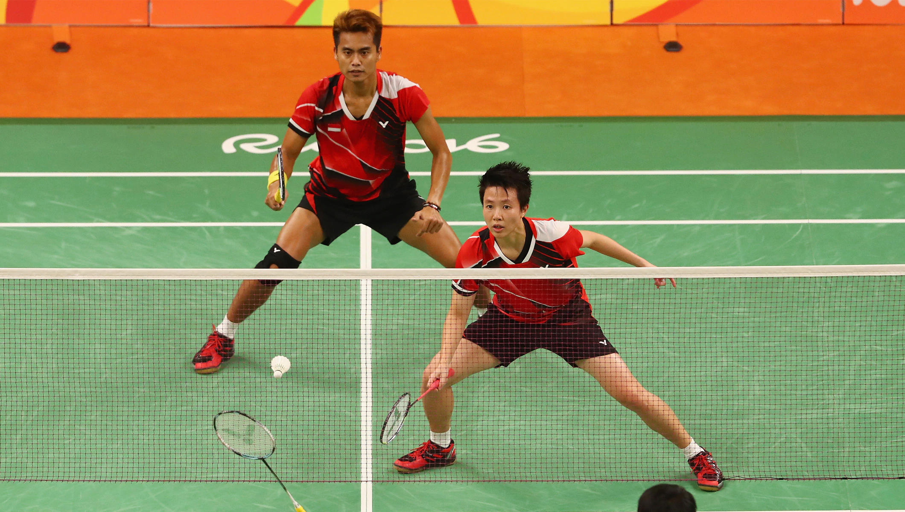
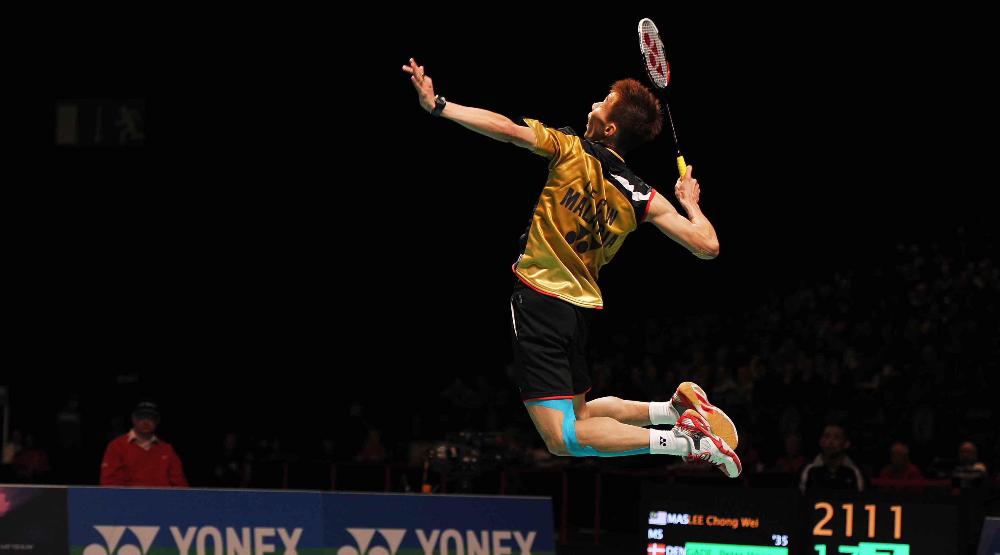

Badminton
- 
- 
Badminton has been one of my passions for years now. I started playing in 2015. Recently I have developed an interest in professional play. My favourite player has to be Lin Dan. He is a Chinese professional player. He is a two-time Olympic champion, five-time World champion, as well as a six-time All England champion
Volleyball

I only recently became interested in volleyball. I started in the first semester of this year and quickly grew to love it. Like with badminton I've also started following the professional scene. The best team historically is Brazil. Brazil has three gold medals at the Olympic Games, won three times the World Championship and nine times the World League.